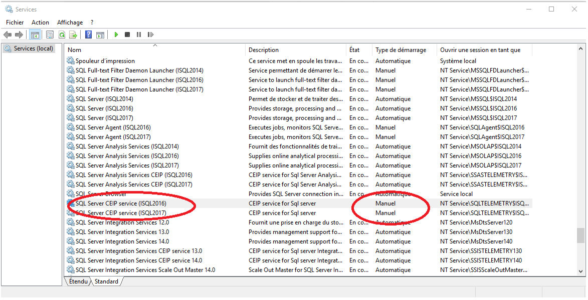

News
Disable Microsoft SQL Server Error Usage And Reporting, see why: Here
Welcome to your free tool for database maintenance. This tool performs automatically the bests practices of maintenance tasks required by the average DBA, without having any. It is also a great tool for occasional or professional DBAs who manage many databases. This is why we called it "YourSqlDba".
For those seeking an installation of yourSqlDba go here.
Once installed, YourSqlDba is designed to require minimal knowledge of database administration to have automatic proper database maintenance. This is always true for most small to mid-size instances and even quite larger ones.
To make it simple, if you are able to perform maintenance of all your databases in a sequential manner with your actual hardware, YourSqlDba's default setup is likely be able to do it also.
However if you are used to do maintenance by your own means may be you would like to split / parallelize maintenance tasks because your maintenance window is too long. I assume in this case that you probably have a basic knowledge of SQL Agent jobs/tasks and their schedules.
From there you can take jobs and jobs steps of YourSqlDba default setup, duplicate them and adjust calls to YourSqlDba main procedure to segregate among database to be managed, management actions, and their individual schedules. YourSqlDba main procedure offers a powerful inclusion and exclusion pattern matching based on database names.
To get acceptable maintenance windows, YourSqlDba spread over time some maintenance tasks (like updating statistics) over a week (specified through a parameter that can be modified). It only reorganize/rebuild indexes when they reach a fragmentation level threshold. These two behaviors reduce maintenance windows time over standard SSIS database maintenance tasks offered in SQL Server management studio.
Disable Microsoft SQL Server Error Usage And Reporting, see why: Here
To get the correct script use a capable Unicode browser like Edge, Chrome or Firefox.
Some situations makes displaying of the script source fail when it goes through a link to Github source. Actually (from August 2018) it seems to be more stable. Insure that the displayed script is complete by checking that the script last instruction is:
Exec Install.PrintVersionInfo
These links only display the script that you need to copy and paste and run from a SQL Server Management Studio query window.
YourSQLDba_InstallOrUpdateScript.sql v6.5.8.0
You can also install a previous version of YourSqlDba. See the History of versions for YourSQLDba
After running the script of one of the version above, and when installing YourSqlDba for the first time, don’t forget to run Install.InitialSetupOfYourSqlDba stored procedure. It needs only to be done at first install to setup database mail, backup directories.
Allows you to customized YourSqlDba's parameters and makes YourSqlDba alive throught two SQLAgent jobs and able to communicate with your through SQL Server database mail.
Further updates of YourSqlDba on the same SQL Server instance is just a matter of running the latest YourSqlDba script. There is no need to run InitialSetupOfYourSqlDba again. Customization done to SQL Agent's YourSqlDba's jobs is preserved.
For those who want to contribute to YourSqlDba code, YourSqlDba is hosted on GitHub.
Here is a quick summary of how to work with Github.
Here is a multilingual site for the equivalent summary in different formats (Html, Pdf).
There is also an excellent 1 hour Youtube video that makes very clear of what is GIT, I recommend it to feel confident with using this source control.
YourSqlDba becomes alive through two SQL Agent jobs that must be set initially by you, by executing stored procedure Install.InitialSetupOfYourSqlDba.
The role of YourSqlDba Full Maintenance job is to perform daily maintenance and full backups at 00:00 and the role of YourSqlDba Log backpus is to do log backups every 15 minutes. The default schedule, email operator for them are all SQL Agent job parameters and can be modified to your convenience.
The rest of the parameters are part of job tasks in the form of parameters the call of Maint.YourSQLDba_DoMaint's stored procedure. You may need to modify them to tune some parameters like exclusion of databases from full recovery policy check.
Go to Set up Mirror-Standby server section, if you are planning to configure standby server for recovery or to make downtime minimal when upgrading to a newer version of SQL Server.
General daily maintenance job is scheduled at 00:00 Am through SQL Agent scheduled associated to the job. Logs backups are scheduled by the same mean at every 15 minutes all across the day. These schedules are the default one and can be modified on a job by job basis.
| Databases maintained | Maintenance done | Include filter parameter | Exclude filter parameter |
|---|---|---|---|
| All databases | SQ Server logs recycling, SQL Agent log cleanup, backup history cleanup. Keeps 30 days of backup history, 30 days of SQL Server logs, which are recycled each day. | N/A | N/A |
| Master, Model, MsDb | Old backup cleanup, complete backups, integrity check, updating optimizer statistics, intelligent index reorganization. | Always included | Never excluded |
| User databases | Old backup cleanup, complete and log backups, integrity check, updating optimizer statistics, intelligent index reorganization. | By default all, otherwise database name must match one of the SQL like filter, in the like list. | By default none. If Specified reduce what's left by the include filter. |
| Task performed | When | Results an on what | Results |
|---|---|---|---|
| Database complete backup files removal | Once daily at maintenance time. (1st task) | .Bak files older than 1 day (parameter value default) | The resulting backup directory only keeps last complete backup, unless you modify YourSqlDba parameter. |
| Database log backups file removal | Once daily at maintenance time. (1st task) | .Trn files older than 8 days (parameter value default) | The resulting backup directory keeps for eigth days of log backup, unless you modify YourSqlDba parameter. |
| Integrity check | Once daily at maintenance time. (2nd task) | All system databases and selected user databases. | If integrity errors are found on a database, it is put offline. |
| Optimizer statistics update | Once daily at maintenance time. (3rd task) | Update stats is done on 1/7 of all tables of each selected database. |
By parameter default this fraction is 7, so all database tables are finally updated on a week basis. Parameter can be changed a smaller number, to shorten the full cycle on all tables. Tables with < 100K rows are updated with fullscan, bigger table with 30% sampling. |
| Index reorganization | Once daily at maintenance time on selected indexes.(4th task) | For indexes on which fragmentation is above 5% | Once ran, most of the reorganization are going to be done with index reorganization, not index rebuild because index typically index doesn't fragment this quickly from day to day. |
| Complete backup and first log backup | Once daily at maintenance time on selected databases. (5th task) | Resulting databases based on included and exclude filter combination. |
.Bak files named by the database name, backup date. Example: MyDb_[2013-05-14_13h21m24_Tue]_database.Bak
.Trn files named by the database name, backup date. Example: MyDb_[2013-05-14_13h21m24_Tue]_logs.Trn
|
| Error log recycling | Once daily at maintenance time | Actual server log become an archive |
YourSqlDba keeps 30 days of server logs which give 30 logs Example : |
| Log History backup | Once daily at maintenance time | Delete stuff older that 30 days |
YourSqlDba keeps 30 days of history Example: Exec Msdb.dbo.sp_delete_backuphistory
|
| Mail history log | "" | "" |
Example: Exec msdb.dbo.sysmail_delete_log_sp
|
| Mail items | "" | "" |
Example: Exec msdb.dbo.sysmail_delete_mailitems_sp
|
| Backup history | "" | "" |
Example: Exec Msdb.dbo.sp_delete_backuphistory
|
| Job history | "" | "" |
Example: Exec Msdb.dbo.sp_purge_jobhistory
|
| Maintenance history | "" | "" |
Example: Exec Msdb.dbo.sp_maintplan_delete_log
|
| Task performed | When | To What | Results |
|---|---|---|---|
| Log backup | Every 15 minutes | .Trn files | Every log backup is append to the day's log backup file created when full maintenance ran. |
| Log file shrink | When log file expands beyond a size related to database files in a 40% ratio. | Computed size are added as following: Real size for files of primary group, 1/10 for other. | Avoids frequents resizing, which fragment disk space. |
Aside maintenance, YourSqlDba offers stored procedures and functions handy for DBA. Here is a quick list:
| Procedure | Purpose |
|---|---|
| Maint.YourSQLDba_DoMaint | Does all maintenance actions described in YourSqlDba Summary for DBA page of this section. Aside default job, allows adding other maintenance jobs with different and possibly concurrent schedules and or or job steps with different database filters. |
| Maint.BringBackOnlineAllOfflineDb | Fast way to reset all offline database to online. It may happens if corruption is detected for your database files, or if no valid backups were performed for these databases since the time specified upon initial setup of YourSqlDba. |
| Procedure | Purpose |
|---|---|
| Install.InitialSetupOfYourSqlDba |
Creates two SQL Agent jobs for YourSqlDba maintenance that calls Maint.YourSqlDba_DoMaint (see YourSqlDba Job Summary for Dba) and configure SQL Agent for email reporting. Configures also Database Mail for YourSqlDba maintenance reporting. Last, configures maximum of consecutive days without backups for any given database before turning it offline. |
|
Manage auto-mounted network drive letters. Set also information for master auto start procedure dbo.YourSqlDbaAutostart_ReconnectNetworkDrive. This procedure associates UNC path to a drive letter. This is the only stored procedure of YourSqlDba that is installed into master database. Network drives are a way to shorten access to network location, instead of using UNC paths. |
| Procedure | Purpose |
|---|---|
| Mirroing.AddServer | Configures a Linked server for the purpose of YourSqlDba database mirroring (which is in fact a YourSqlDba standby server). |
| Mirroring.DropServer | Remove linked server created for the purpose of YourSqlDba database mirroring. |
| Mirroring.DoRecovery | Do a recovery of mirror/standby databases and put local matching databases offline. |
| Mirroring.Failover | Failover selected databases to standby server. |
| Upgrade.MakeDbComptabileToTarget | Called by Mirroring.failover when using Mirroring as a mean to migrate databases to another instance with a newer version. Its set compatibility level to match current version instance. If source database is SQL Server 2005 and target instance is a newer version, it converts full text catalog to the new file storage format of the newer versions. |
| Procedure/function | Purpose |
|---|---|
| Maint.ShowHistory | Show YouSqlDba job history. Output can be filter by anyone of this parameters in combination: Job number, Error filtering only, Results Display limit, More detailed diagnostics messages. |
| Maint.ShowHistoryErrors | Same as using Maint.ShowHistory with Error Filtering only. Job number and display limit are optional. |
| Maint.DiagDbMail | Helps resolve email issues by listing MSDB log tables related to database mail. |
| Install.PrintVersionInfo | List actual version of YourSqlDba. Can also be selected from function Install.VersionInfo. |
| PerfMon.ResetAnalyzeWaitStats | Reset wait stats info once before starting monitoring SQL Server WaitStats. Intended to be used with function PerfMon.AnalyzeWaitStats. |
| PerfMon.AnalyzeWaitStats | Reports wait stats averaged over time since last execution of
PerfMon.ResetAnalyzeWaitStats. Use
Select * from PerfMon.AnalyzeWaitStats |
| Procedure | Purpose |
|---|---|
| Maint.SaveDbCopyOnly | Save a copy of a database without affecting backup history and log backup restore sequences. |
| Maint.SaveDbOnNewFileSet | Save a copy of a database using YourSqlDba naming and convention for database files. Requires minimal parameters (ex: only database name) if last backup location is still ok for use. |
| Maint.duplicateDb | Save and restore a copy of a database onto the same server. There is an option to retain the backup file. Very quick way to get a copy of a database. |
| Maint.duplicateDbFromBackupHistory | Makes a copy from a database using most up-to-date backup from backup history. This is an even quicker way to get a copy of an existing database, since it uses existing backups. |
| Maint.DeleteOldBackups | Delete old backups files |
| Maint.BringBackOnlineAllOfflineDb | Reset offline status off all offline DB. This may happen when YourSqlDba put databases offline, for databases for which no backups where taken successfully for a given number of days selected by user. |
Get easily exclusive access to databases : See section Exclusive access and backups for database upgrades.
Hi everybody! This new release deserve special attention because it brings long awaited features:
YourSqlDba required the existence of SA account in its previous versions. Since some DBA disable this account to replace it by another, it prevented using YourSqlDba with them. Now upon upgrade or install the script will create a YourSqlDba login with sysadmins privileges and a random generated password that you can modify to your convenience. You can then use the same YourSqlDba account and password account on all your sql instances connected by YourSqlDba mirroring.
Across releases of minor versions of release 6, some modifications were made to make this feature to auto-correct itself. HOWEVER, if you have a setup of multiple servers mirroring to a single server, you must run Mirroring.SetYourSqlDbaAccountForMirroring with @YourSqlDbaAccountForMirroringPwd parameter value set for every source server targeting the same mirror.
There is a new value in Maint.YourSQLDba_DoMaint for parameter @DoBackup to specify a differential backup. For those who are newbies to the concept of differential backups, it is a in between solution between full backups and log backups. A database recovery with differential backups still requires a valid full backup, but all logs backup performed in between this full backup and the last differential backup done and used in recovery are not required. In other words it speed up recovery.
Differential backups tends to grow as long as a new full backup is not performed. It is the history of all changes performed to the database since the last full backup. Log backups on the other hand are proportional to the amount of changes done to the database between log backups. If you keep multiple differential backups, between full backup, there is some part of them who will have the same content. However this is a great solution that affords to get some point in time recovery on very large databases in simple recovery mode, for which the amount of change is quite small in proportion of the complete database.
Typical use of differential backup is against very large database for which a full backup is done one every week, followed by differential backups every day, and log backups. Differential backups doesn't affect capability to do point in time recovery from logs backups. SQL Management Studio will remove useless log backup restores between full backup and differential backup chosen.
A new parameter @spreadCheckDb allows to vary DBCC depth scanning over a given number of maintenances. For every database for which page verification is based on checksums a faster DBCC checkDb going to be performed by adding WITH PHYSICAL_ONLY option. Most if not all integrity problem are caused by the IO subsystem failures. When this option is added to DBCC CheckDB, it does more limited scan of the database structures, but theses failures are going to be detected by checksum.
So YourSqlDba strategy regarding DBCC CheckDb in now this one:
Upgrading SQL Databases to next release in now much quicker, since last synchro of database in simple recovery mode is done through differential backup. The scenario is the following: Make the instance where the next SQL Server release is already installed, the YourSqlDba mirror server.
The day before migration, YourSqlDba will restore all selected databases for maintenance to the mirror server and keep them synchronized with log backups/restore for databases in full recovery mode.
On migration day, when running failover, databases in simple recovery mode are going to be synchronized with a differential backup/restore, and those in full recovery mode by a last log backup restore. The speed gain comes from the fact that no more full backup/restore needs to be performed again for the final synchronization of database in simple recovery model.
When deleting old backup an not enough long variable was making a "string truncation error". This problem is now corrected.
This version removes a mechanism that exclude simultaneous Log backups with other database maintenance operations on the same database. We discovered that this requirement was lifted since SQL2005.
To see a reliable comment about this go to this article.
Because of this mechanism, YourSqlDba was sometime giving errors because excessive wait on long log backups, so this won't happen anymore.
YourSqlDba relies on log_reuse_wait status in sys.databases to do log shrink attempts. If this status was <> 0 a 10 secondes delay was performed. It appears that, in SQL2012, this status is 2 most of the time (log backup), which makes this delay appears at every attempts to shrink a log's database. This status doesn't cause any error at shrink attempt, so use also include it in the list of status that doesn't prevent shrink log attempts.
This procedure creates or replace a default maintenance task, with a suffix of your choice in the name. It uses already existing setup for database mail.
For more information see the full new stored procedure description at: Install.AddOrReplaceMaintenance
By default YourSqlDba add a timestamp to backup file names. A new parameter has been added to Maint.YourSqlDba_DoMaint which is @TimeStampNamingForBackups. When specified with a value of 0 this parameter stops this behavior. You need to be aware that the parameters @FullBkpRetDays and @LogBkpRetDays parameters become ineffective, since total backups and log backups are overwritten at each full maintenance. Log backups still accumulate into the same log backup file during the day no matter the value of the parameter. New with version 6.2.4.
We now propagate disabled/non-disabled status when replicating accounts.
Backup directories parameters for Data and log are now optional, as they take default value specified in server properties\database settings.
It seems that SQL Server Error Usage and Reporting disturb normal TCP/IP connections. To disable it locate SQL Server Error and Usage Reporting in SQL Server tools, and run it. Uncheck the corresponding options and click ok. We also saw some performance fluctuations issues associated to SQL Server Telemetry activity.

Next stops SQL Server CEIP services and set them to manual startup mode.
Maint.YourSqlDba_DoMaint does most of the default maintenance, and calls some of the other procedures below to do it. It have several parameter that are customized
For most people having to manage a database server this is more than enough to get a nice maintenance plan.
For more seasoned DBA sometimes customization of this procedure beyond the ones allowed by initial setup is needed. It can be easily be achieved by modifying its parameters in job steps. For a description of these parameters see: Maint.YourSQLDba_DoMaint
Parameters can be modified from SQL Management Studio\SQL Agent\YourSqlDba... Job \Job Step
Job schedule execution can be modified in SQL Management Studio\SQL Agent\YourSqlDba...Job \JobSchedule.
Email configuration can be changed from SQL Management Studio\Manage\DatabaseMail.
Main procedure used to process all regular maintenance on databases. Usually called from a SQL Server Agent job step, it can also be call manually. To customize maintenance you can add tasks calling this procedure.
| Parameter name | Parameter description | |||||||||||||||
|---|---|---|---|---|---|---|---|---|---|---|---|---|---|---|---|---|
| @oper |
SQL Server Agent Operator. Any valid operator name is allowed. By default 'YourSQLDba_Operator'. |
|||||||||||||||
| @MaintJobName |
nvarchar(200) SQL Server Agent job name logged into the maintenance
history. Any valid job name is allowed. By
default
'YourSQLDba: DoInteg,DoUpdateStats,DoReorg,Full backups'.
|
|||||||||||||||
| @DoInteg |
When equal to 1 perform Integrity tests on selected databases. By default |
|||||||||||||||
| @DoUpdStats |
When equal to 1 perform Update Statistics on selected databases. By default |
|||||||||||||||
| @DoReorg |
When equal to 1 perform Selective Index Reorganization or Rebuild depending of an internal fragmentation level found on them. When Rebuilding now leave the original FillFactor. By default |
|||||||||||||||
| @DoBackup |
In case of log backups, @FullBackupPath and @LogBackupPath are ignored, the value used at last full backup performed by Maint.YourSQLDba_DoMaint or Maint.SaveDbOnNewFileSet, is the one used for log backups. When an empty string is supplied no backup is performed.
|
|||||||||||||||
| @FullBackupPath |
Location where full database backup files (.Bak) are going to be stored. (Required parameter). The UNC format is allowed. Example A : Example B :
|
|||||||||||||||
| @LogBackupPath |
Location where log database backup file (.Trn) are going to be stored. (Required parameter). The UNC format is allowed. Example A : Example B : We recommend that you use the same location as the @FullBackupPath parameter. In this way, all of your backup files concerning a database would be shown on the same page in chronological order in Windows Explorer. Nevertheless you can use a different partition if the disk is full.
|
|||||||||||||||
| @TimeStampNamingForBackups |
By default YourSqlDba add a timestamp (date and time) to
backup file names. When specified with a value of 0 this
parameter stops this behavior. You need to be aware that
the parameters @FullBkpRetDays and @LogBkpRetDays
parameters become ineffective, since total backups and log
backups are overwritten at each full maintenance. Log
backups still accumulate into the same log backup file
during the day no matter the value of the parameter.
|
|||||||||||||||
| @FullBkpRetDays |
Number of days to retain the preceding full backups. Older backups are deleted from the backup directory. NULL = no cleanup (default). |
|||||||||||||||
| @LogBkpRetDays |
Number of days to retain the preceding transaction logs backups. Older backups are deleted from the backup directory. NULL = no cleanup (default). |
|||||||||||||||
| @NotifyMandatoryFullDbBkpBeforeLogBkp |
Apply to log backups only. When equal to 1 an error is reported when a log backup can't be done because full database backup was never performed since database creation or since last restore. When equal to 0 this error is not reported. A value of 0 applies usually well on test databases, restored from production database for which we don't really care about doing log backup.
|
|||||||||||||||
| @BkpLogsOnSameFile |
Log backups storing method.
|
|||||||||||||||
| @SpreadUpdStatRun |
The "update statistics" for database tables is spread on the specified number of executions. By default the "update statistics" is spread on a 7 executions cycle. At the end of the cycle all tables in the database will have been treated.
|
|||||||||||||||
| @SpreadCheckDb |
The full DBCC CHECKDB for database spread on the specified number of executions of the main maintenance. By default the "DBCC CheckDb" is spread on a 7 executions cycle. It is not the turn of a given database to be fully DBCC checked, it is checked faster with DBCC CheckDb … WITH Physical_Only and only if its page verification option is set to Checksum. If page verification option is not to "checksum", DBCC CheckDb will always without this option. |
|||||||||||||||
| @ConsecutiveDaysOfFailedbackupsToPutDbOffline |
Maximum number of consecutive days of failed full backups allowed for a database before putting that database (Offline). One successful full backup will reset to zero the counter of consecutive days of failed full backups for that database. By default = 9999. Last resort action to inform database administrators Normally YourSQLDba send's an email to the SQL administrators when there is a full backup failure. However if these emails stop reaching their recipients, there is a need for a last resort mechanism to inform the administrators that the data is not protected. The maintenance parameter @ConsecutiveDaysOfFailedbackupsToPutDbOffline instructs YourSQLDba to put offline a database as a last resort to signal that full backups of a given database have failed for the specified number of consecutives days. When the full backup maintenance job is executed a counter is incremented once a day for each database for which the full backup failed. If this days counter is equal to the maximum number of consecutive failed full backup days allowed by the parameter @ConsecutiveDaysOfFailedbackupsToPutDbOffline, the corresponding database is put offline. The counter is reset to zero when the full backup succeed's for the database. This feature is a last resort to attract attention of a database administrator or application users to a potentially dangerous backup problem that can lead to data loss. Note that the suspension of service can occur only at the end of the full backup maintenance job which is usually in the middle of the night. Important: Putting a database offline implies a temporary suspension of service. You may not want that to happen. Even if no backups are available for the database. You must set a value for this number of days allowed for full backup failures. The number of days to choose depends on the availability level of the database administrators and of the risk tolerance for data loss. When full backups don't work, it's usually because the disk is almost full. Most of the time the log backups continues even when the full backups didn't. This is because log backups need less disk space than full backups. The log backups allows the restoration of a database from the last available full backup. Keep in mind that the greater the number of days gone without full backups or even without transaction logs backups, the riskier it is to lose data in case of a SQL server failure. You have to decide the threshold number of days of full backup failures that will cause the temporary suspension of service for the database. Here are 3 scenarios to choose from
|
|||||||||||||||
| @MirrorServer |
Name of the mirror SQL instance destination of the automatic restoration of the backups. (Optional parameter). The Mirroring.AddServer procedure must be executed to record this mirror SQL instance, prior to using it here in the @MirrorServer parameter. Example: NULL = don't restore on a mirror SQL instance. Executed tasks when @MirrorServer contains a SQL instance name:
|
|||||||||||||||
| @ReplaceSrcBkpPathToMatchingMirrorPath |
Does a "string like" replace into backup location uses by source server to get backup location as seen from mirror server. For example suppose backups are put onto a local directory (here (here: When mirror server is instructed to do a restore, it will replace into the whole file path
This is necessary since the restore command can't be performed from its local path since while the backup file is local to the source server it isn't for the mirror. Mirror needs a different way to name the backup it want to restore. The same holds true for SQLReport location. can also be written as : |
|||||||||||||||
| @ReplacePathsInDbFileNames |
@ReplacePathsInDbFilenames, will allow string like replace of part of path/file names in the databases files to be restored. If omitted databases are restored to default data and log database locations. For example suppose that: source Db files from SQLProd are located under
source Db files from SQLReport are located under And If you want to put them on the mirror server on different disks and subdirectories let's say
@ReplacePathsInDbFileNames will have to be specified this way: Or To restore to same location (let's say they are under D and E drive) use: |
|||||||||||||||
| @IncDb |
One database to select, or many using a database list, or many more using a wildcard database list. When left empty, all databases are selected for maintenance.
(Optional parameter). The databases names in the list, can include wildcard characters from the "Select" instruction "like" clause.
|
|||||||||||||||
| @ExcDb |
One database to exclude, or many using a database list, or many more using a wildcard database list.
(Optional parameter). When left empty, no databases are excluded for maintenance. If specified, exclusion processing applies to resulting database list selected by @IncDb processing, which means all databases if @IncDb is an empty string.
|
|||||||||||||||
| @ExcDbFromPolicy_CheckFullRecoveryModel |
Database list to be excluded from the policy check of the full recovery model.
(Optional parameter). If the parameter is absent; no database is excluded from the policy check. Maint.YourSqlDba_DoMaint, will send an error email when a database is in Simple Recovery model and this database is not listed in the @ExcDbFromPolicy_CheckFullRecoveryModel parameter. Each database name filter must be on its own line between the quote pair. The databases name filter list can include wildcard characters as describe in the above @IncDb parameter.
|
The following example performs full backups on all user databases. It automatically excludes the system databases.
Exec YourSQLDba.Maint.YourSQLDba_DoMaint
@oper = 'YourSQLDba_Operator' -- operator used to email report
-- job name displayed in email report
, @MaintJobName = 'YourSQLDba: DoInteg,DoUpdateStats,DoReorg,Full backups'
, @DoInteg = 1 -- performs database integrity test
, @DoUpdStats = 1 -- performs update statistics
, @DoReorg = 1 -- performs reorganize, rebuild
, @DoBackup = 'F' -- performs full backups and initial log backups
, @FullBackupPath = 'G:\Sql\Backups\' -- full backup path destination
, @LogBackupPath = 'G:\Sql\Backups\' -- log backup path destination
, @FullBkpRetDays = 0 -- Flush all previous database backups
, @LogBkpRetDays = 7 -- Flush log backups older than (7) days
, @SpreadUpdStatRun = 7 -- Spreads Update Stats over 7 executions
-- Maximum number of consecutive days of failed full backups allowed
-- for a database before putting that database (Offline).
, @ConsecutiveDaysOfFailedbackupsToPutDbOffline= 9999
, @MirrorServer = 'MirrorSQLServ\SQL'
, @IncDb = -- Each database inclusion filter must be
-- on its own line between the following quote pair
'
'
, @ExcDb = -- Each database exclusion filter must be
-- on its own line between the following quote pair
'
'
, @ExcDbFromPolicy_CheckFullRecoveryModel = -- Each database exclusion filter must be
-- on its own line between the following quote pair
'
'The following example performs full backups on databases which name starts with "Sales" but exclude of this result those which finish with "Temp" plus one or 2 digits.
For example Databases Sales, SalesGeorge, SalesTemp1, SalesTemp25 are first selected by @IncDb parameter, but SalesTemp1 and SalesTemp25 are excluded by @ExcDb. So the final result is that maintenance is going to apply only to Sales, SalesGeorge.
Exec YourSQLDba.Maint.YourSQLDba_DoMaint
@oper = 'YourSQLDba_Operator' -- operator used to email report
, @MaintJobName = 'YourSQLDba: Sales Full backups' -- job name displayed in email report
, @DoBackup = 'F' -- performs full backups and initial log backups
, @FullBackupPath = 'G:\Sql\Backups\' -- full backup path destination
, @LogBackupPath = 'G:\Sql\Backups\' -- log backup path destination
, @FullBkpRetDays = NULL -- No cleanup of the full backups
, @LogBkpRetDays = 7 -- Flush log backups older than (7) days
, @IncDb = -- Each database inclusion filter must be on its own line
-- between the following quote pair
'
Sales%
'
, @ExcDb = -- Exclude databases that ends with "temp" followed by
-- a single digit, or a double digit
'
%temp[0-9]
%temp[0-9][0-9]
'The following example performs only the log backups on all databases.
Exec YourSQLDba.Maint.YourSQLDba_DoMaint
@oper = 'YourSQLDba_Operator' -- operator used to email report
, @MaintJobName = 'YourSQLDba: Log backups' -- job name displayed in email report
, @DoBackup = 'L' -- performs log backups only
, @FullBackupPath = 'G:\Sql\Backups\' -- full backup path destination
, @LogBackupPath = 'G:\Sql\Backups\' -- log backup path destination
, @IncDb = -- Each database inclusion filter must be on its own line
-- between the following quote pair
'
'
, @ExcDb = -- Each database exclusion filter must be on its own line
-- between the following quote pair
'
'Go back to YourSqlDba QuickStart
Exec YourSQLDba.Install.InitialSetupOfYourSQLDba
@email = 'myAdmin@myDomain.com' -- Email recipients (or distribution list)
, @SmtpMailServer = 'myMailServer' -- Mail server that accept SMTP mail
, @ConsecutiveDaysOfFailedBackupsToPutDbOffline = 3 -- for part time DBAs...OR if you want to specify a different location for backups than the default one specified in server properties / database settings
Exec YourSQLDba.Install.InitialSetupOfYourSQLDba
@FullBackupPath = 'D:\Sql\Backups' -- full backup path destination
, @LogBackupPath = 'D:\Sql\Backups' -- log backup path destination
, @email = 'myAdmin@myDomain.com' -- Email recipients (or distribution list)
, @SmtpMailServer = 'myMailServer' -- Mail server that accept SMTP mail
, @ConsecutiveDaysOfFailedBackupsToPutDbOffline = 9999
-- Maximum number of consecutive days of failed full backups allowed
-- for a database before putting that database (Offline)| Parameter name | parameter description |
|---|---|
| @FullBackupPath |
Optional. Location where full database backup file (.Bak) are going to be stored. UNC are allowed.
Default : value specified in server properties\database settings |
| @LogBackupPath |
Optional. Location where log database backup file (.Trn) are going to be stored. UNC are allowed.
Default : value specified in server properties\database settings |
|
Email recipients (or distribution list). Each item must be separated by semicolon; Limited to 100 characters despite wider parameters, because SQL Server Agent limits operator definition to 100 characters.
|
|
| @SmtpMailServer |
Mail server that will be authorized to accept SMTP mail from your SQL Server machine. By default authentication is set to anonymous, but it can modified later in database mail account generated as an account of the generated YourSQLDba_MailProfile.
|
| @ConsecutiveDaysOfFailedbackupsToPutDbOffline |
Maximum number of consecutive days of failed full backups allowed for a database before putting that database (Offline). One successful full backup will reset to zero the counter of consecutive days of failed full backups for that database. Last resort action to inform database administrators Normally YourSQLDba send's an email to the SQL administrators when there is a full backup failure. However if these emails stop reaching their recipients, there is a need for a last resort mechanism to inform the administrators that the data is not protected. The maintenance parameter @ConsecutiveDaysOfFailedBackupsToPutDbOffline instructs YourSQLDba to put offline a database as a last resort to signal that full backups of a given database have failed for the specified number of consecutives days. When the full backup maintenance job is executed a counter is incremented once a day for each database for which the full backup failed. If this days counter is equal to the maximum number of consecutive failed full backup days allowed by the parameter @ConsecutiveDaysOfFailedBackupsToPutDbOffline, the corresponding database is put offline. The counter is reset to zero when the full backkup succeed's for the database. This feature is a last resort to attract attention of a database administrator or application users to a potentially dangerous backup problem that can lead to data loss. Note that the suspension of service can occur only at the end of the full backup maintenance job which is usually in the middle of the night. Important: Putting a database offline implies a temporary suspension of service. You may not want that to happen. Even if no backups are available for the database. You must set a value for this number of days allowed for full backup failures. The number of days to choose depends on the availability level of the database administrators and of the risk tolerance for data loss. When full backups don't work, it's usually because the disk is almost full. Most of the time the log backups continues even when the full backups didn't. This is because log backups need less disk space than full backups. The log backups allows the restoration of a database from the last available full backup. Keep in mind that the greater the number of days gone without full backups or even without transaction logs backups, the riskier it is to lose data in case of a SQL server failure. You have to decide the threshold number of days of full backup failures that will cause the temporary suspension of service for the database. Here are 3 scenarios to choose from
|
| @FullBkExt |
Optional : By default full backup have ".bak" extension
|
| @LogBkExt |
Optional : By default log backup have ".trn" extension
|
| @sourceEmail |
Optional : Change the sender name to the sender of your choice.
|
| @emailServerAccount |
Optional: If basic authentication is required, email server account can be specified.
|
| @emailServerPassword |
Optional: If basic authentication is required, email server account password can be specified.
|
Prints the YourSQLDba version.
Exec YourSQLDba.Install.PrintVersionInfoExec YourSQLDba.Install.AddOrReplaceMaintenance
@JobNameSuffix = '_JobForNeedXXX' -- full backup path
, @FullBackupPath = 'G:\Sql\Backups' -- full backup path destination
, @LogBackupPath = 'G:\Sql\Backups' -- log backup path destination
, @ConsecutiveDaysOfFailedbackupsToPutDbOffline = 9999
-- Maximum number of consecutive days of failed full backups allowed
-- for a database before putting that database (Offline).| Parameter name | parameter description |
|---|---|
| @JobNameSuffix |
Add this suffix to default job names, YourSQLDba_FullBackups_And_Maintenance and YourSQLDba_LogBackups. If a name of a job exists with the same suffix, replace the job, otherwise creates it. |
| @FullBackupPath |
Location where full database backup file (.Bak) are going to be stored. UNC are allowed.
|
| @LogBackupPath |
Location where log database backup file (.Trn) are going to be stored. UNC are allowed.
|
| @ConsecutiveDaysOfFailedbackupsToPutDbOffline |
Maximum number of consecutive days of failed full backups allowed for a database before putting that database (Offline). One successful full backup will reset to zero the counter of consecutive days of failed full backups for that database. Last resort action to inform database administrators Normally YourSQLDba send's an email to the SQL administrators when there is a full backup failure. However if these emails stop reaching their recipients, there is a need for a last resort mechanism to inform the administrators that the data is not protected. The maintenance parameter @ConsecutiveDaysOfFailedBackupsToPutDbOffline instructs YourSQLDba to put offline a database as a last resort to signal that full backups of a given database have failed for the specified number of consecutives days. When the full backup maintenance job is executed a counter is incremented once a day for each database for which the full backup failed. If this days counter is equal to the maximum number of consecutive failed full backup days allowed by the parameter @ConsecutiveDaysOfFailedBackupsToPutDbOffline, the corresponding database is put offline. The counter is reset to zero when the full backkup succeed's for the database. This feature is a last resort to attract attention of a database administrator or application users to a potentially dangerous backup problem that can lead to data loss. Note that the suspension of service can occur only at the end of the full backup maintenance job which is usually in the middle of the night. Important: Putting a database offline implies a temporary suspension of service. You may not want that to happen. Even if no backups are available for the database. You must set a value for this number of days allowed for full backup failures. The number of days to choose depends on the availability level of the database administrators and of the risk tolerance for data loss. When full backups don't work, it's usually because the disk is almost full. Most of the time the log backups continues even when the full backups didn't. This is because log backups need less disk space than full backups. The log backups allows the restoration of a database from the last available full backup. Keep in mind that the greater the number of days gone without full backups or even without transaction logs backups, the riskier it is to lose data in case of a SQL server failure. You have to decide the threshold number of days of full backup failures that will cause the temporary suspension of service for the database. Here are 3 scenarios to choose from
|
Replaces the value of a parameter in all SQL Server Agent jobs which executes the Maint.YourSQLDba_DoMaint procedure. Intended for people who have many many YourSqlDba tasks. Usually it is easier to go directly on the single task of one of the two SQL Server Agent job.
| Parameter name | parameter description |
|---|---|
| @paramName |
Parameter name for which the value must be changed. |
| @paramValue |
New value for the parameter. |
Exec YOURSQLDBA.Install.UpdateMaintenanceTasksParam
-- Parameter name for which the value must be changed.
@paramName = '@ConsecutiveFailedbackupsDaysToPutDbOffline'
-- New value for the parameter.
, @paramValue = '20'Exec YOURSQLDBA.Install.UpdateMaintenanceTasksParam
@paramName = '@LogBkpRetDays' -- Parameter name for which the value must be changed.
, @paramValue = '14' -- New value for the parameter.There are two causes possible to that and what to do.
Sql Server put the database offline by itself.
YourSqlDba put the database offline because one of the following reasons.
When a database is put offline by YourSqlDba, this is because you specified at initial setup of YourSqlDba to do it so if no successful backups of that database where done after the specified number of days specified. Did you notice that you were no longer receiving YourSqlDba email alerts or are you just ignoring them? Don't panic! Bring them online by right clicking on database to get contextual menu and find the option to bring it online. A faster way to do it if you have many is to run
Maint.BringBackOnlineAllBdInEmergencyOrOffline. Next find out why it happened by displaying backup errors with Maint.ShowHistoryErrors. Solve the problem (most often a lack of backup space, or an inccessible or lack of privileges to backup destination), and once ok performs Maint.SaveDbOnNewFileSet. Last find out why email messages alert from YourSqlDba doesn't reach you. Check anti-spam, diagnose database mail with Maint.DiagDbMail.
YourSqlDba does adequate backups and save log backup history by saving regularly MSDB , every time it performs log backups.
YourSqlDba use a much better naming pattern for backup files and log history backup details to know which files where used and when every backup was performed.
SQL Server management Studio display this history when you want to do a restore. All parameters are there by default to perform a complete restore. This is very easy to select which backup, and it appropriates log backups and do a point-in-time recovery for a given database.
If you loose all databases your need to recover first MASTER. Get some help if you have no clue to do that.
Rerun YourSqlDba script to re-create YoursqlDba database.
Once done we suggest to restore MSDB database which contains backup history. I suggest to stop SQL Agent before because it is likely to open a connection to MSDB which prevents restoring it easily.
Once done we suggest to restore MSDB database which contains backup history. I suggest to stop SQL Agent before because it is likely to open a connection to MSDB which prevents restoring it easily.
You can use Maint.RestoreDb to restore it, if you are not familiar with SQL Management Studio to restore it without backup history. However if you look carefully to SQL Management Studio restore dialog, you'll see on the main screen how to select a backup file. Choose whatever method with which you are comfortable.
From there is starts to be easier. You get backup history for every database. From them is it really easy to restore a database, all is there by default, just click ok.
Bring back online quickly all databases that are offline or in emergency mode.
YourSQLDba may put a database in emergency mode when an integrity error is detected.
YourSQLDba may put a database offline as a last resort to signal that full backups of that database have failed for the specified number of consecutives days.
When the source of the problem is resolved, the SQL administrators can bring back online all databases by executing the Maint.BringBackOnlineAllBdInEmergencyOrOffline procedure.
Exec YourSQLDba.Maint.BringBackOnlineAllBdInEmergencyOrOfflineRestore database from a backup copy made by Maint.SaveDbCopyOnly.
@ReplaceExistingDb parameter is equivalent of With replace option of T-SQL Restore command. Contrary to the Restore command, which accept restoring a database from one of its backups, even it the replace option is missing, here @ReplaceExistingDb set to 0 forbids overwriting and existing database. To backup user must be member of db_backupOperator or db_owner, and to restore he must be member of db_creator server role.
| Parameter name | parameter description |
|---|---|
| @TargetDb |
Name of the destination database to create. It must not already exists.
|
| @PathAndFilename |
Full path and file name of the backup file.
|
| @ReplaceExistingDb |
Set to 1 to overwrite existing database. When set to 0 and database exists, no restore is performed.
|
Exec YourSQLDba.Maint.RestoreDb
@TargetDb = 'SalesDb' -- name of the database
-- path and file name of the backup
, @PathAndFilename = 'g:\sql\backups\SalesDbBeforeMonthlyReports.bak'
-- specify to restore over an existing database
-- or a database for which SQL wants you to save log tail before restoring,
-- if you don't care about existing unsaved log transactions
, @ReplaceExistingDb = 0Sometimes as a DBA or occasional DBA, you need to a complete full backup of a database before an important operation, to ensure that you are going to be able to restore in case of failure.
If your database is in complete recovery mode (see you database properties\options\recovery mode) the easiest thing to do is to start log backup job from SQL Agent\Job\YourSQLDba_LogBackups. Usually log backups are quick, and it does it for all databases. At the end of the day log backup files won't be bigger, because sooner or later, transactions in log backup are going to be flush to log backup files. Just after log backup, note the time. If a restore is need you can restore at the precise point-in-time using SQL Management Studio\Databases\YouDatabase\Tasks\Restore and click on Specific Date and Time. This allows to specify at which time the database and its transactions since last full backup are going to be reapplied.
If your database isn't in complete recovery mode, the easiest way to a backup is to run Maint.SaveDbOnNewFileSet. If you don't mind putting the new backup with others in their usual location, just specify database name as unique parameter to the stored procedure. YourSqlDba gives a new backup name that reflects in its name the backup time, so it won't erase existing full backup of the database. By default it will use the last backup location of the last backup. If you want another location see parameters of Maint.SaveDbOnNewFileSet.
If your goal is to duplicate a database, for example to run tests against a copy of a production database use Maint.DuplicateDb.
You can use Maint.DeleteOldBackups to deletes backup not handled by automatic maintenance. By default backup files of databases not selected by maintenance are cleanup accordingly to a specific parameter of procedure Maint.YourSQLDba_DoMaint.This procedure provides some parameters to handle other databases.
Start backups for a given database with a new file set (the pair full backup file and log backup files for a database).
This new file set is going to be the reference set for log backups, which will continue to append log backups to the same file until the next YourSQLDba.Maint.YourSQLDba_DoMaint run. In that run, the log backup path location will reset to YourSQLDba_DoMaint backup path locations.
| Parameter name | parameter description |
|---|---|
| @DbName |
Database name to backup.
|
| @FullBackupPath |
Location where the full database backup file (.Bak) will be stored. UNC are allowed.
|
| @LogBackupPath |
Location where the log database backup file (.Trn) will be stored. UNC are allowed.
|
| @oper |
Operator name, by default YourSQLDba_Operator. Any user defined SQL Server Agent Operator is allowed.
|
| @MirrorServer |
Name of a mirror SQL instance destination to automatically restore the backup. Optional. Name of a mirror SQL instance destination to automatically restore the backup. The Mirroring.AddServer procedure must be executed to record this mirror SQL instance, prior to using it here in the @MirrorServer parameter. Example: All the SQL logins will be copied from the source instance to the mirror SQL instance. NULL = use the last mirror SQL instance used by the global maintenance.
|
Exec YourSQLDba.Maint.SaveDbOnNewFileSet
@DbName = 'DATABASE' -- Database name to backup.
-- Location where the full database backup file (.Bak) will be stored.
, @FullBackupPath = 'G:\Sql2005Backups\'
-- Location where log database backup file (.Trn) will be stored.
, @LogBackupPath = 'G:\Sql2005Backups\'
-- Operator name, by default YourSQLDba_Operator.
, @oper = 'YourSQLDba_Operator'
, @MirrorServer='SqlM\Sales'Make a backup copy without disturbing log backups performed with regular log backup maintenance. Use the special With copy_only parameter, to avoid disturbing backup log sequence and database LSN number. These types of backups are not recorded to the backup log history and can't be restored from SQL Management Studio graphical interface for database restore. The must be restore with the supplied Maint.RestoreDb procedure.
The procedure checks if the call has at least rights to backup the database. Being member of db_backupOperator fix database role is the minimal rights set required. It is convenient because it doesn't allow end user other access to the database (unless some rights are added to him through public database role). This limit allow to put credentials into a script that calls Sqlcmd without the risk of exposing database content or giving more access to this user. Being constrained to put a database backup to a designed location accessible only from the database engine avoid disclosure of information.
| Parameter name | parameter description |
|---|---|
| @DbName |
Database name to backup.
|
| @PathAndFilename |
Full path and file name of the backup file.
|
| @errorN |
Output error code for batches
|
Exec YourSQLDba.Maint.SaveDbCopyOnly
@DbName = 'SalesDb' -- name of the database
, @PathAndFilename = 'g:\sql\backups\SalesDbBeforeMonthlyReports.bak'Creates a duplicate of an existing database. Target Db must not exists.
| Parameter name | parameter description |
|---|---|
| @sourceDb |
Name of the source database to duplicate.
|
| @TargetDb |
Name of the destination database to create. It must not already exists.
|
| @PathAndFilename |
Full path and file name of the backup file.
|
| @KeepBackupFile |
When set to 0, backup file is removed after restore.
|
Exec YourSQLDba.Maint.DuplicateDb
@sourceDb = 'Sales' -- Source database
, @TargetDb = 'SalesBeforeMonthlyReport' -- Target database
, @PathAndFilename = 'g:\sql\backups\SalesBeforeMonthlyReports.bak' -- .bak
, @KeepBackupFile = 0 -- don't keep backup file once restore is doneDelete old backup files.
This procedure is usually executed from a global maintenance job in SQL Server Agent, but it can be executed alone in its own job in SQL Server Agent, or in a SQL Server Management Studio query window.
| Parameter name | parameter description | ||||||||||||
|---|---|---|---|---|---|---|---|---|---|---|---|---|---|
| @oper |
SQL Server Agent Operator. Any valid operator name is allowed. By default 'YourSQLDba_Operator'.
|
||||||||||||
| @MaintJobName |
SQL Server Agent job name logged into the maintenance history. Any valid job name is allowed. By default 'YourSQLDba: DoInteg,DoUpdateStats,DoReorg,Full backups'.
|
||||||||||||
| @Path |
Full path of the backup directory. Mandatory. A UNC path is allowed. Example A : Example B :
|
||||||||||||
| @BkpRetDays |
Number of days to retain the backup files selected by their corresponding database name. Backup files that are too old, will be deleted from the backup directory. NULL = no cleanup (default value).
|
||||||||||||
| @BkpRetDaysForUnselectedDb |
Number of days to retain the backup files not selected by their corresponding database name. Backup files that are too old, will be deleted from the backup directory. This parameter permits the deletion of backup files for databases that don't exist anymore in the SQL server. That could happen for a test database, taken in backup, deleted after a test, and no more selected by @incDb or @excDb parameters. NULL = no cleanup (default value).
|
||||||||||||
| @RefDate |
Reference date for the cleanup of backup files. This date can be provided in the following form NULL = use the current date and time. (default value).
|
||||||||||||
| @extension |
File extension for the backup files to be deleted. The file extention can be of any length. Examples :
Default value = ''.
|
||||||||||||
| @IncDb |
Database filter list to include in the cleanup process. Each database inclusion filter must be on its own line between the quote pair. Each database inclusion filter can include regular characters and wildcard characters used in the SQL « like » operator in the « Select » statement.
@IncDb is an optional parameter. If it is absent, all databases names visible in the SQL server Management Studio database list, are selected.
|
||||||||||||
| @ExcDb |
Database filter list to exclude exclude from the list of database names selected by the @incDb parameter. Each database exclusion filter must be on its own line between the quote pair. Each database exclusion filter can include regular characters and wildcard characters used in the SQL « like » operator in the « Select » statement. @ExcDb is an optional parameter. If it is absent, no databases names selected by the @IncDb are excluded.
|
||||||||||||
| @JobNo |
Current job number to record maintenance messages in the history table of YourSQLDba. This parameter is generated by the global maintenance and can be used here to add cleanup messages to the global maintenance messages, in the same job number. NULL = creates a new entry in the maintenance history table of YourSQLDba. (default value).
|
This sample delete's all backup files for all databases.
Let's suppose that the server execute a copy of your backup files on another server. This could be done with the XCOPY command.
The following sample could delete the backup files, after their copy on tape.
Exec YourSQLDba.Maint.DeleteOldBackups
@path = 'G:\Sql\Backups\ForXCOPY\' -- Full path of the backup directory.
, @BkpRetDays = 0 -- Delete backup files selected by their file name
-- in the selected database list generated by
-- the @IncDb and @ExcDb parameters,
-- and for these files
-- their age in minutes
-- must be greater than (@BkpRetDays * 1440) minutes.
, @BkpRetDaysForUnselectedDb = 0
-- Delete backup files not selected by their file name
-- in the selected database list generated by
-- the @IncDb and @ExcDb parameters
-- and for these files
-- their age in minutes
-- must be greater than (@BkpRetDaysForUnselectedDb * 1440) minutes.
-- This parameter permits the deletion of backup files for
-- databases that don't exist anymore in the SQL server.
, @extension = '' -- Select backup files with any extension (.bak .trn and others).This sample delete's all backup files for databases names ending with '_test', but retains files '_test' containing the word 'Archive'.
For example Sales_test, SalesGeorge_test are selected by @IncDb, but SalesGeorge_archive_Test is excluded by @ExcDb.
Exec YourSQLDba.Maint.DeleteOldBackups
@path = 'G:\Sql\Backups\ForXCOPY\' -- Full path of the backup directory.
, @BkpRetDays = 0 -- Delete backup files selected by their file name
-- in the selected database list generated by
-- the @IncDb and @ExcDb parameters,
-- and for these files,
-- their age in minutes
-- must be greater than (@BkpRetDays * 1440) minutes.
, @BkpRetDaysForUnselectedDb = NULL
-- Ignore backup files not selected by their file name
-- in the selected database list generated by
-- the @IncDb and @ExcDb parameters.
, @extension = '' -- Select backup files with any extension (.bak .trn and others).
, @IncDb = -- Each database inclusion filter must be
-- on its own line between the following quote pair
'
%[_]test
'
, @ExcDb = -- Each database exclusion filter must be
-- on its own line between the following quote pair
'
%Archive%
'This sample delete's all backup files for databases names ending with '_test', but retains files '_test' containing the word 'Archive'.
For example Sales_test, SalesGeorge_test are selected by @IncDb, but SalesGeorge_archive_Test is excluded by @ExcDb.
Exec YourSQLDba.Maint.DeleteOldBackups @path = 'G:\Sql\Backups\ForXCOPY\' -- Full path of the backup directory.
, @BkpRetDays = 0 -- Delete backup files selected by their file name
-- in the selected database list generated by
-- the @IncDb and @ExcDb parameters,
-- and for these files,
-- their age in minutes
-- must be greater than (@BkpRetDays * 1440) minutes.
, @BkpRetDaysForUnselectedDb = NULL
-- Ignore backup files not selected by their file name
-- in the selected database list generated by
-- the @IncDb and @ExcDb parameters.
, @extension = '' -- Select backup files with any extension (.bak .trn and others).
, @IncDb = -- Each database inclusion filter must be
-- on its own line between the following quote pair ' %[_]test '
, @ExcDb = -- Each database exclusion filter must be
-- on its own line between the following quote pair ' %Archive% 'Database maintenance are an important part of a DBA job. By maintenance I mean an application software upgrade that requires a database maintenance (some schema modification for example).
Usually application software maker is going to require you to ensure that your database is not accessible by anybody, and to have the most current backup before maintenance, so you are going to be able to restore it in case the maintenance goes wrong.
In today interconnected world having a complete exclusive access to a database is not an easy task. Putting it in single_user mode or in restricted user access is often not a adequate solution. A software service other than your application may try to connect to your database, locking it from any other access. The only safe way to warrant that the database is dedicated to you is to do quickly in sequence: put it offline, put it back offline, and rename it. By renaming it, software services, especially those who makes connection pooling won't find anymore the database, so won't reconnect to it. The same hols true for actual user of any application.
YourSqlDba supply three clever store procedures for that specific purpose. Maint.PrepDbForMaintenanceMode get a most up to date backup/snapshot of the database. Putting it strait, if you need to restore because maintenance goes into trouble, Maint.RestoreDbAtStartOfMaintenanceMode will use them to allow you to get your database as it was before the maintenance.
If you use SQL Server Entreprise Edition, Maint.PrepDbForMaintenanceMode does a snapshot of the database, which is a very quick way to get a backup equivalent of a database, and a very quick mean to rollback changes to a database. For other editions, if your database is in full recovery mode, it performs a log backup (with log mark for precise point-in-time restore) which is quick and sufficient to do a complete up to date restore of your database, given that daily full backup is there and all other log backups. If it is in simple recovery mode, it performs a full back which is the only mean YourSqlDba supplies to warrant an backup up to date to restore.
In case of maintenance failure that request a database restore you need to bring back database at how it was at start of maintenance. For that purpose you do a Maint.RestoreDbAtStartOfMaintenanceMode which brings back the renamed database to its initial state. If your maintenance failed because a problem that can be solved, e.g. like a lack of space, you can then attempt again the maintenance. Either you succeed or you just restore the database with not further attempt to maintenance it, you must return DB to normal use, which just mean to rename it back to its initial name. For that purpose just run Maint.ReturnDbToNormalUseFromMaintenanceMode. Essentially it renames the database in its current state by removing the same suffix you specified in parameter. This one must be the same as the one you specified when using Maint.PrepDbForMaintenanceMode.
This procedure offers a mean to get exclusive access to a database, by changing the database name.
Some mainteance processes required that a user (usually an application administrator or a DBA) has an exclusive access to the database. External connections from applications or services or users must be kicked out of the database, and prevented from re-accessing the database for the duration of the maintenance process. Ongoing transactions must be rollbacked in the disconnection process. Only a database renaming process insures this state. The administrator must have a way to switch quickly to the new database name by having some connections definitions (ODBC data source or connect string configuration files) ready for the new database name and only accessible for him. External connections cannot have access to the database anymore because they still point to the old database name.
This procedure offer a mean to get exclusive access by performing the following actions :
The new name is build with the original name + '_' + @DbNameSuffixForMaintenance.
The backup file name is build with the original database name + '_' + @DbNameSuffixForMaintenance+ '.BAK'.
| Parameter name | parameter description |
|---|---|
| @DbList |
One or many databases name, see sample below to see how to specify multiple databases.
|
| @DbNameSuffixForMaintenance |
Suffix to add to the database name to rename it.
|
| @PathOfBackupBeforeMaintenance |
Path of the backup that will be used to return the database to its current state at this procedure completion, in case of maintenance failure. Recommended, otherwise specify an empty string. When the @PathOfBackupBeforeMaintenance is absent and a full backup exist for the database; the Maint.PrepDbForMaintenanceMode procedure executes a log backup. This log backup will be appended to the previous log backup file; even if in the log backup job @BkpLogsOnSameFile = 0 (Create a new backup file for each log backup).
|
| @SetRecoveryModeToSimple |
Option to put the database in the « Simple » recovery mode, in preparation for the maintenance. 1 = yes (put the database in the « Simple » recovery mode) 0 = no (default) recommended option. The "Simple" recovery mode reduces the size of the log file necessary for the maintenance when you have limited disk space. But the « Simple» recovery mode breaks the restoration sequence and a full backup will be done by the stored proc Maint.ReturnDbToNormalUseFromMaintenanceMode.
|
This sample shows how to get exclusive access to databases GPI1, GPI2, GPI3.
All connections will be closed on databases GPI1, GPI2, GPI3.
They will be renamed to GPI1_Maintenance, GPI2_Maintenance, GPI3_Maintenance.
A backup of these will be put in d:\backups, under the names GPI1_Maintenance.bak, GPI2_Maintenance.bak, GPI3_Maintenance.bak.
Exec YourSQLDba.Maint.PrepDbForMaintenanceMode
@DbList = -- Each database must be listed on its own line
'
GPI1
GPI2
GPI3
'
, @DbNameSuffixForMaintenance= 'Maintenance'
, @PathOfBackupBeforeMaintenance = 'G:\Sql\backups'This sample shows how to get exclusive access to databases GPI1, GPI2.
All connections will be closed on databases GPI1, GPI2.
They will be renamed to GPI1_Maintenance, GPI2_Maintenance.
A backup of these will be put in d:\backups, under the names GPI1_Maintenance.bak, GPI2_Maintenance.bak.
The recovery mode will not be changed.
Exec YourSQLDba.Maint.PrepDbForMaintenanceMode
@DbList = -- Each database must be listed on its own line
'
GPI1
GPI2
'
, @DbNameSuffixForMaintenance = 'Maintenance'
, @PathOfBackupBeforeMaintenance = G:\Sql\backups'
, @SetRecoveryModeToSimple = 0This procedure restores the selected databases in the state they were just after the call to Maint.PrepDbForMaintenanceMode.
Upon completion, the database state is the same as it was immediately after the call to Maint.PrepDbForMaintenanceMode. This allows another Maintenance attempt. It also allows postponing of the maintenance process by making the database available to user with a call to Maint.ReturnDbToNormalUseFromMaintenanceMode.
This procedure requires that the Maint.PrepDbForMaintenanceMode procedure has been executed.
Its parameters must match those specified by Maint.PrepDbForMaintenanceMode. The @DbList parameter can contain a subset of the database set specified for Maint.PrepDbForMaintenanceMode.
| Parameter name | parameter description |
|---|---|
| @DbList |
A list of one or many database names, see sample below to see how to specify multiple names. The database list can be a subset of the corresponding list passed to Maint.PrepDbForMaintenanceMode.
|
| @DbNameSuffixForMaintenanceProcess |
Suffix to add to the database names to rename them.
|
| @PathOfBackupBeforeMaintenance |
If full backups have been produced by the Maint.PrepDbForMaintenanceMode procedure; specify here the path of the directory for those full backups.
(Optional parameter). The path for the full backups will be used to return the databases to their previous state. This is useful in the case of an maintenance failure. Note that each full backup file name includes the database name, followed by the chosen suffix and the ".BAK" extension. When the @PathOfBackupBeforeMaintenance is absent and full backups exist for the databases; the RestoreDbAtStartOfMaintenanceMode procedure executes a restore of those full backups and restores all log backups up to the moment when the Maint.PrepDbForMaintenanceMode procedure has been executed.
|
This sample restore among databases renamed and backuped by Maint.PrepDbForMaintenanceMode databases specified in @DbList which are in this sample 'GPI1, GPI2'. They are returned to their state as they where immediately after the call at Maint.PrepDbForMaintenanceMode. The parameter @DbList can be a subset of the databases processed by Maint.PrepDbForMaintenanceMode if it is not necessary to restore all of them.
Exec YourSQLDba.Maint.RestoreDbAtStartOfMaintenanceMode
@DbList = -- Each database must be listed on its own line
'
GPI1
GPI2
'
, @DbNameSuffixForMaintenance= 'Maintenance'
, @PathOfBackupBeforeMaintenance = 'G:\Sql\backups'Maint.ReturnDbToNormalUseFromMaintenanceMode
Rename databases to their original names from the names given by «PrepDbForMaintenanceMode». If the database is part of YourSqlDba full backup plan, a new full backup and log backup are performed on a new file sequence. Latest backup made before mainteance are kept inintact. YourSqlDba's stored procedure Maint.SaveDbOnNewFileSet is used to perform the new backup.
Parameters must match those used for Maint.PrepDbForMaintenanceMode. Parameter @DbList can be a subset of the one given to Maint.PrepDbForMaintenanceMode.
| Parameter name | parameter description |
|---|---|
| @DbList |
One or many databases name, see sample below to see how to specify multiple names. Could be a subset of the corresponding list passed to PrepDbForMaintenanceMode. Theses are the original names of the database before rename by PrepDbForMaintenanceMode.
|
| @DbNameSuffixForMaintenance |
Suffix used to rename the database.
|
This sample takes databases renamed and backup by Maint.PrepDbForMaintenanceMode, and renames them to their original name. Databases specified in @DbList (in this sample only 'GPI1, GPI2') can be a subset of the ones specified to PrepDbForMaintenanceMode.
Exec YourSQLDba.Maint.ReturnDbToNormalUseFromMaintenanceMode
@DbList = -- Each database must be listed on its own line
'
GPI1
GPI2
'
, @DbNameSuffixForMaintenance = 'Maintenance'Rename databases to their original names from the names given by «PrepDbForMaintenanceMode». If the database is part of YourSqlDba full backup plan, a new full backup and log backup are performed on a new file sequence. Latest backups before Maintenance are kept intact. YourSqlDba's stored procedure Maint.SaveDbOnNewFileSet is used to perform the new backup.
Parameters must match those used for Maint.PrepDbForMaintenanceMode. Parameter @DbList can be a subset of the one given to Maint.PrepDbForMaintenanceMode.
| Parameter name | parameter description |
|---|---|
| @DbList |
One or many databases name, see sample below to see how to specify multiple names. Could be a subset of the corresponding list passed to PrepDbForMaintenanceMode. Theses are the original names of the database before rename by PrepDbForMaintenanceMode.
|
| @DbNameSuffixForMaintenanceProcess |
Suffix used to rename the database.
|
This sample takes databases renamed and taken in backup by Maint.PrepDbForMaintenanceMode, and renames them to their original name. Databases specified in @DbList (in this sample only 'GPI1, GPI2') can be a subset of the ones specified to PrepDbForMaintenanceMode.
Exec YourSQLDba.Maint.ReturnDbToNormalUseFromMaintenanceMode
@DbList = -- Each database must be listed on its own line
'
GPI1
GPI2
'
, @DbNameSuffixForMaintenance= 'Maintenance'YourSqlDba is well provided in tools for maintenance diagnostics. It produces a detailed log of all maintenance queries generated, each with completion and plus error messages if any. Output is redirected to Maint.JobHistory and Maint.JobHistoryDetails.
After a new installation of YourSqlDba you may received theses messages:
An error message saying that log backup on a given database, can't be performed as long a new full backup of differential backup is not done.
This is normal, as this is a SQL Server requirement. This will disappear at full maintenance where full backup are taken. You can also start full maintenance task or extract full maintenance step query and modify parameters to just perform full backups.
An error message saying some databases are not in full recovery mode.
By default the maintenance engine ensure that all databases must be in full recovery mode, which allows regular log backups through the day and then the possibility to do point-in-time restore. This is a thing which is very valuable for production databases. However if you have test databases on the same server you would wish to exclude them from this verification. See procedure Maint.YourSqlDba_DoMaint in SP Reference section. Check for parameter@ExcDbFromPolicy_CheckFullRecoveryModel to exclude test databases from this check.
To consult these tables we provide the procedure Maint.ShowHistory which display current log from most recent activity, with alternate resultsets, one for the job, one for the details, and repeat that for each other job. Job details can be informative messages only or maintenance queries generated with their results.
Maint.ShowHistory have also optional parameters: one being the job number, a switch to filter out queries with errors only, another to limit the number of job displayed and a last one to display more diagnostic info.
Another procedure Maint.ShowHistoryErrors just calls Maint.ShowHistory with error filtering option.
When YourSqlDba completes successfully its maintenance it sends an email with the appropriate call to Maint.ShowHistory with appropriate parameters (like job number completed) to display entries specific for that job. It is easier cut and paste the procedure call this way to pinpoint job details.
When YourSqlDba detects error during maintenance it adds to the email the call to Maint.ShowHistoryErrors with appropriate parameters to display errors specific to this job only. It is easier cut and paste the procedure call this way to pinpoint maintenance queries that ran into problems.
Maint.DiagDbMail queries 3 Msdb tables related to Database mail diagnostics. This is an efficient way to find out why YoursqlDba alerts or messages doesn't go through.
Another goodie are the performance monitoring procedures and functions. They are based on Paul Randal's queries to monitor SQL Server wait states: PerfMon.ResetAnalyzeWaitStats reset wait stats accumulated since last call of PerfMon.AnalyzeWaitStats. See PerfMon.AnalyzeWaitStats for more info on how to use it.
Display the job maintenance history. It displays two results sets for each job. First a job summary, followed by the job details. It displays the jobs in most recent order. It displays at most 40 jobs at the same time. Optional filtering parameters are available.
| Parameter name | parameter description |
|---|---|
| @JobNo |
Starts from this job number as the first one.
|
| @DispLimit |
Limit the number of job displayed (max 40).
|
| @FilterErr |
Just display Job and job's details for which an error is recorded.
|
Exec YourSQLDba.Maint.ShowHistory -- display current activity
-- (topmost job, with current job detail)
Exec YourSQLDba.Maint.ShowHistory
@JobNo = 3210 -- display job 3210 at top, followed by older jobs in order of age
, @DispLimit = 1 -- limit display to 1 job
, @FilterErr = 1 -- filter jobs with errors, and job details with errorsDisplay error messages in the job maintenance history. It displays two results sets for each job. First a job summary, followed by the job details. It displays the jobs in most recent order. Optional filtering parameters are available.
| Parameter name | parameter description |
|---|---|
| @JobNo |
Starts to display from this job number.
|
| @DispLimit |
Limit the number of job displayed (max 40).
|
Exec YourSQLDba.Maint.ShowHistoryErrors -- display most recent error messages.
Exec YourSQLDba.Maint.ShowHistoryErrors
@JobNo = 3210 -- display job 3210 error messages.
Exec YourSQLDba.Maint.ShowHistoryErrors
@JobNo = 3210 -- display job 3210 error messages at top, followed by older
-- jobs in order of age.
, @DispLimit = 5 -- limit display to 5 jobs.Reset Average Wait SQL Server statistics that indicates where are main performance problem (when a intensive resource consumption occurs) due to resources limitations. Resources limitations can be due to inadequate queries. See PerfMon.AnalyzeWaitStats for more explanations.
Exec YourSQLDba.PerfMon.ResetAnalyzeWaitStatsReset Average Wait SQL Server statistics that indicates where are main performance problem (when a intensive resource consumption occurs) due to resources limitations. Resources limitations can be due to inadequate queries.
SELECT * FROM YourSQLDba.PerfMon.AnalyzeWaitStats ()WaitType and percentage are main column to pay attention when an intensive task occurs. When no intensive task occurs, it only means relative waits not a performance problem. You must run this query repeatedly for a while during intensive tasks after an initial call to PerfMon.ResetAnalyzeWaitStats. The more the time of the intensive task ran since the last reset, the more you get the average wait time. Seek advice on the net on how to interpret these results. Not all high wait stats means a performance problem. Here an output of this function during idle time.
| WaitType | Wait_S | Resource_S | Signal_S | WaitCount | Percentage | AvgWait_S | AvgRes_S | AvgSig_S |
|---|---|---|---|---|---|---|---|---|
| CXPACKET | 141.67 | 85.75 | 55.93 | 75541 | 32.42 | 0.0019 | 0.0011 | 0.0007 |
| OLEDB | 111.12 | 111.12 | 0.00 | 2275952 | 25.43 | 0.0000 | 0.0000 | 0.0000 |
| ASYNC_IO_COMPLETION | 41.21 | 41.21 | 0.01 | 241 | 9.43 | 0.1710 | 0.1710 | 0.0000 |
| BACKUPBUFFER | 41.03 | 40.84 | 0.19 | 15442 | 9.39 | 0.0027 | 0.0026 | 0.0000 |
| PAGEIOLATCH_SH | 20.71 | 19.55 | 1.16 | 16646 | 4.74 | 0.0012 | 0.0012 | 0.0001 |
| BACKUPIO | 20.38 | 19.87 | 0.51 | 76399 | 4.66 | 0.0003 | 0.0003 | 0.0000 |
| BACKUPTHREAD | 12.62 | 12.47 | 0.16 | 7427 | 2.89 | 0.0017 | 0.0017 | 0.0000 |
| WRITE_COMPLETION | 12.00 | 0.09 | 11.91 | 36067 | 2.75 | 0.0003 | 0.0000 | 0.0003 |
| LCK_M_S | 7.52 | 7.51 | 0.01 | 44 | 1.72 | 0.1708 | 0.1707 | 0.0002 |
| WRITELOG | 7.09 | 6.72 | 0.37 | 20885 | 1.62 | 0.0003 | 0.0003 | 0.0000 |
Diagnose mail problems.
This stored procedure requires no parameter and simply produce three results sets:
Exec YourSQLDba.Maint.DiagDbMailFor some technical reason network drive mapping must be done by the database engine service when it starts.
To perform that, you must set a SQL Server Database Engine service account that have access to network location that are going to be associated with.
If it is a normal windows user that belongs to the same windows domain that access network location, just grant it appropriates access rights (full access).
If it is not the case, this account MUST BE SET through SQL Server configuration manager as it is MANDATED by Microsoft to make this account to have proper rights for SQL Server operations. It is also especially critical in case of database encryption. Seek help for complimentary procedures related to database encryption and changing SQL Server Database Engine service account.
Changing SQL Server database Engine service account requires a service restart.
Once done you can manage network drives that are going to be set by SQL Server Database Engine service using the following procedures:
Maint.CreateNetworkDrives, Maint.DisconnectNetworkDrive and Maint.ListNetworkDrives.
Immediately map drive letters to network location. Inserts the mapping into the Maint.NetworkDrivesToSetOnStartup table, so SQL Server will remap them at startup by executing autostart procedure dbo.YourSqlDbaAutostart_ReconnectNetworkDrive. This is the only object that YouSqlDba puts in master
Map drive letters are only visible to the database engine, not to windows explorer, and can't be used in another windows session because of the fact that they are already in use by SQL Server database engine session. To succeed SQL Server database service account must be authenticable to the network resource, in windows authentication mode.
| Parameter name | parameter description |
|---|---|
| @DriveLetter |
Drive letter to map on a UNC network location. Example:
|
| @unc |
UNC (Universal Naming Convention) network location to be mapped. Example:
|
Exec YourSQLDba.Maint.CreateNetworkDrives
@DriveLetter = 'R:' -- Drive letter to use
, @unc = '\\MyBackupServer\backupShare' -- UNC to the shared resourceDelete network mapping, and remove network mapping definition from NetworkDrives table.
| Parameter name | parameter description |
|---|---|
| @DriveLetterOrUNC |
Drive letter to Disconnect. Example:
|
Exec YourSQLDba.Maint.DisconnectNetworkDrive
@DriveLetterOrUNC = 'R:' -- network drive definition to remove and deleteShow existing network drive definition in Maint.NetworkDrivesToSetOnStartup table.
Exec YourSQLDba.Maint.ListNetworkDrivesYourSqlDba mirroring is much more similar to standby server than real database mirroring in SQL Server. it is based on backup and restored continuously to another server call the mirror server. This has a great advantages.
YourSqlDba needs linked served to communicate with the mirror server. First in needs an standard sysadmin standard account on the destination server. Then use Mirroring.AddServer to define it properly.
Next modify job step that perform backups with Maint.YourSQLDba_DoMaint stored procedure. Pay attention to parameters @mirrorServer, @ReplacePathsInDbFileNames and @ReplaceSrcBkpPathToMatchingMirrorPath. Parameter @ReplacePathsInDbFileNames is mandatory in many circumstances.
The first parameter @mirrorServer is mandatory for the jobstep that does full backup and the one that does log backups. The second is needed if your databases locations can't be the same on the source and target servers. The last is needed when backup location can be expressed in the same way from the source and the destination server. This happen when for example when you backup to a UNC share which is a directory on the mirror server, and you want to translate this UNC location into a real local directory path.
Failover of selected database is performed using Mirroring.Failover if source server is able to do it and must be always attempted, because if puts offline source databases that must not be accessible anymore. Mirroring.DoRecovery takes selected target server databases our of restoring mode this available to application. This does not the magic of changing connection strings to point to the new server. Some admin change server name instead to do the trick or change DNS entries.
Mirroring can be used as a trick to reduce maintenance windows required to achieve migration of application's databases compatibles to a newer version of SQL Server. You set up a mirror server to this newer instance version. The next night all backups full backup are going to be restore to destination server. During the next day all log backups are going to be restored every 15 minutes. This is here that Mirroring.Failover does the magic. It gets the last log backup from source server and restore it and puts source database offline.
It is much quicker to get the latest version of the database. For databases in simple recovery mode it performs complete backup/restore again. Usually most production databases are in complete recovery mode and log backup restore does the trick for them. Mirroring.Failover have database selection parameters, so we suggest to restrict the list of database to production database first. Other databases migration can then be deferred to later. During the process some minimal compatibility trick can be done. One is related to fulltext catalogs disk structure that change from SQL2005 to later versions. Mirroring.Failover calls Upgrade.MakeDbCompatibleToTarget to convert them to the new structure.
Add a mirror SQL instance in YourSQLDba for the source SQL instance.
The SQL Agent jobs which uses this mirror SQL instance name in the parameter, will execute a restore of the backups to the mirror SQL instance.
The goal of this restoration is to verify the integrity of the backup files.
The mirror SQL instance will also contain a copy of the logins, to allow it to become a standby server.
The automatic restoration works like this; as soon as YourSQLDba generates a backup file, it restores it to a mirror SQL instance. If this restoration fails, an email is sent to the SQL administrator.
'\\server\SQLBackupShare'.Workings of the "Mirroring.AddServer" procedure
The Mirroring.AddServer adds the mirror SQL instance to YourSQLDba by doing the following :
After the execution of the Mirroring.AddServer procedure and for each databases with a recovery model Full or Bulk-logged, you must execute the Maint.YourSQLDba_DoMaint or Maint.SaveDbOnNewFileSet procedure to generate a full backup for each mirrored database in the mirror instance.
If there is no full backup of the database when the next log backup is executed, YourSQLDba will send an email to the database administrators to warn that a full backup must be done before making a log backup.
The email will lead you to the following error message:
To restore a LOG backup to the mirror server the database "your database name" in the mirror server must exist and be in «RESTORING» state.
| Parameter name | parameter description |
|---|---|
| @MirrorServer |
Mirror SQL instance name. (Required parameter). Example:
|
| @RemoteLogin |
SQL login of type « SQL Server authentication » in the mirror SQL instance. (Required parameter). This login must have sysadmin server role in the mirror SQL instance. You can use the 'sa' login.
|
| @RemotePassword |
Password for the login in the the mirror SQL instance. (Required parameter).
|
| @YourSqlDbaAccountForMirroringPwd |
(Facultative). Password of the YourSqlDba login. Only required when if multiple mirroring source instances of YourSqlDba share the same destination server. |
This example adds the mirror SQL instance 'MirrorServ\MirrorSQL2005' in YourSQLDba for the source SQL instance.
-- This command must be executed in the source instance
Exec YourSQLDba.Mirroring.AddServer
@MirrorServer = 'MirrorServ\MirrorSQL2005'
, @RemoteLogin = 'sa'
, @RemotePassword = 'RemotePassword'Make selected databases out of restoring state in the SQL mirror server to make them accessible.
The databases to be restored in the SQL mirror instance must be in the "(RESTORING)" state.
After the execution of the Mirroring.DoRecovery procedure and for each databases with a recovery model Full or Bulk-logged, you must make a full backup of the recovered databases. On the next log backup, YourSQLDba will send an email to the database administrators to warn that a full backup must be done before making a log backup.
The email will lead you to the following error message:
Log backup forbidden before doing a first full backup of [ "database name" ] status is "status of the database".
| Parameter name | parameter description | |||||||||||||||
|---|---|---|---|---|---|---|---|---|---|---|---|---|---|---|---|---|
| @IncDb |
List of databases to be made accessible. (Optional parameter). When left empty, all databases are selected. Each database inclusion filter must be on its own line between the single quotes. The databases names in the list, can include wildcard characters from the "Select" instruction "like" clause.
|
|||||||||||||||
| @ExcDb |
List of databases to exclude from the database list generated by the @IncDb parameter. (Optional parameter). When the list is empty, no database is excluded. Each database exclusion filter must be on its own line between the single quotes. The databases names in the list, can include wildcard characters from the "Select" instruction "like" clause. See the @IncDb parameter above for a description of the wildcard characters.
|
The following example make's accessible all databases that are in "RESTORING" state.
-- This command must be executed on the SQL mirror instance.
Exec YourSQLDba.Mirroring.DoRecovery
@IncDb = -- Each database inclusion filter must be
-- on its own line between the following single quotes:
'
'
, @ExcDb = -- Each database exclusion filter must be
-- on its own line between the following single quotes:
'
'The following example make's accessible the selected databases that are in "RESTORING" state.
-- This command must be executed on the SQL mirror instance.
Exec YourSQLDba.Mirroring.DoRecovery
-- Each database inclusion filter must be
-- on its own line between the following single quotes:
@IncDb =
'
ACHAT
Sales%
'
-- Each database exclusion filter must be
-- on its own line between the following single quotes:
, @ExcDb =
'
%[_]Test
%temp[0-9]
%temp[0-9][0-9]
'This procedure performs a Failover to the standby server of the selected databases. Used in a upgrade process, for which the target instance is at a newer SQL Server version, it calls procedure Upgrade.MakeDbCompatibleToTarget. This procedure set compatibility level of the database to SQL Server destination version. If the database is SQL2005, it upgrades fulltext catalogs to the new structure of higher version. Databases selected on source instance are put offline as a mean to protect them from being accessed by an application and being modified instead of the one on the failover server.
Having a working mirroring server.
The Snapshot databases in the source server are excluded automatically from the list of selected databases.
The Mirroring.Failover procedure executes the following steps for each selected database:
When all databases have been processed, the Mirroring.Failover procedure shows the migration status of each database.
After the execution of the Mirroring.Failover procedure and for each databases with a recovery model Full or Bulk-logged, you must execute the Maint.YourSQLDba_DoMaint or Maint.SaveDbOnNewFileSet procedure to generate a full backup for each migrated database in the mirror server.
If there is no full backup of the database when the next log backup is executed, YourSQLDba will send an email to the database administrators to warn that a full backup must be done before making a log backup of theses databases.
The email will lead you to the following error message:
Log backup forbidden before doing a first full backup of [ "database name" ] status is "status of the database".
| Parameter name | parameter description | |||||||||||||||
|---|---|---|---|---|---|---|---|---|---|---|---|---|---|---|---|---|
| @Simulation |
Simulation mode to get potential error messages. 1 = yes. 0 = no (default).
|
|||||||||||||||
| @IncDb |
List of the databases to be processed. (Optional parameter). When left empty, all databases are selected. Each database inclusion filter must be on its own line between the single quotes. The databases names in the list, can include wildcard characters from the "Select" instruction "like" clause.
|
|||||||||||||||
| @ExcDb |
List of databases to exclude from the database list generated by the @IncDb parameter. (Optional parameter). When the list is empty, no database is excluded. Each database exclusion filter must be on its own line between the single quotes. The databases names in the list, can include wildcard characters from the "Select" instruction "like" clause. See the @IncDb parameter above for a description of the wildcard characters.
|
The following example migrates all databases to SQL Server 2008.
-- This command must be executed on the SQL source instance.
Exec YourSQLDba.Mirroring.Failover
@Simulation = 0
-- Each database inclusion filter must be
-- on its own line between the following single quotes: '
, @IncDb =
'
'
-- Each database exclusion filter must be
-- on its own line between the following single quotes: '
, @ExcDb =
'
'The following example migrates the selected databases to SQL Server 2008.
-- This command must be executed on the SQL source instance.
Exec YourSQLDba.Mirroring.Failover
@Simulation = 0
-- Each database inclusion filter must be
-- on its own line between the following single quotes: '
, @IncDb =
'
ACHAT
Ventes%
'
-- Each database exclusion filter must be
-- on its own line between the following single quotes: '
, @ExcDb =
'
%[_]Test
%temp[0-9]
%temp[0-9][0-9]
'Set compatibility level to match target instance version. If source database is SQL2005, rebuild catalog structure accordingly to higher SQL version.
It checks that the destination server is higher than SQL Server 2005 server, if it is the case:
| Parameter name | parameter description |
|---|---|
| @DbName |
Name of the database to convert. Mandatory.
|
The following example finalize the migration of the database Database_to_be_converted to the SQL Server 2008 format.
Exec YourSQLDba.Upgrade.MakeDbCompatibleToTarget
@DbName = 'Database_to_be_converted'Set a common password for YourSqlDba account when multiple server share a single mirror.
It changes linked server configurations used for mirroring. Some Mirror need to be defined.
| Parameter name | parameter description |
|---|---|
| @YourSqlDbaAccountForMirroringPwd |
A common password to set for multiple source servers sharing a single mirror. If no value is supplied, and a connection can't be made, it resets the password to a random generated value. |
The following example make's accessible all databases that are in "RESTORING" state.
-- This command must be executed on the SQL mirror instance.
Exec YourSQLDba.Mirroring.SetYourSqlDbaAccountForMirroring
@YourSqlDbaAccountForMirroringPwd='YourSecretPasswordSauce'
'GIT clone https://github.com/pelsql/YourSqlDba.git
GIT branch
GIT status (show changed files, unstaged one in red)
GIT add filename/directories
GIT rm filename/directories
GIT status
GIT commit
GIT Push
Initial setup is mandatory after YourSqlDba First install or upgrade, or when renaming/dropping recreating YourSqlDba database.
This procedure sets default backup locations for database backup and logs. It also sets SMTP email server that is going to be used by SQL Database Mail to send maintenance job report or alerts, and email recipients for them.
Initial setup creates also two maintenance jobs in SQL Agent. The first one does daily maintenance at midnight and the second one regular logs backups (every 15 minutes). Daily maintenance does database optimization, database consistency check and initial daily database full and log backups.
The maintenance jobs have each a single step that call SQL stored procedure Maint.YourSqlDba_DoMaint. This procedure have several parameters and some comes from running Install.InitialSetupOfYourSqlDba.
See Install.InitialSetupOfYourSqlDba description for parameters and some samples.
Install.InitialSetupOfYourSqlDba recreates the jobs default definition for daily maintenance and log backups.
Upgrading YourSqlDba is as simple as getting the script by clicking the link in YourSqlDba Quick Start to display the script. Just copy/paste the script into SQL Management Studio query window and be run itan by hitting F5 key.
The script is meant to be upgradable from any previous version. It does a backup of the existing YourSqlDba database, drops it and create a new one. If you ran into problems when upgrading, just try to re-run it. Sometimes it solves the problem.
Upgrades preserves YourSqlDba agent jobs.
See Exclusive access and backups for database upgrades to know how get automatic backups and exclusive access before database maintenance to upgrade it. These procedures allows quickest setup of what it need be ready to do single/multiple database upgrades, and safety procedure to rollback failed databases upgrade.
See this section Diagnostics (maintenance, performance) to find out how helpful are YourSqlDba diagnostics tools, and to get some goodies about performance diagnosis in general from YourSqlDba stored procedures.
See Mirroring to read more about this subject. Mirroring with YourSqlDba is quite easly to set up and it adds the value of having a server ready to be promoted to become the production server in case of source server failure.
Moreover it offers the value of making an automatic verification of your backups which is the most important thing aside doing backup themselves.
Steps to install SQL Server mirroring.
'\\server name\backup folder'.'\\servername\backupfolder'. Often you must specify parameter @ReplacePathsInDbFileNames which is mandatory in many circumstances.Choose an SQL instance which will be used as a SQL mirror for the databases to be restored. The selected SQL mirror instance and the SQL instance of origin must respect the following conditions:
Edit the global maintenance job YourSQLDba_FullBackups_And_Maintenance script in SQL Server Agent in the SQL instance of origin which executes the Maint.YourSQLDba_DoMaint procedure.
Add the @MirrorServer parameter.
The @FullBackupPath and @LogBackupPath parameters must use a UNC format like '\\servername\backupfolder'.
Edit the log backup maintenance job YourSQLDba_LogBackups script in SQL Server Agent in the SQL instance of origin which executes the Maint.YourSQLDba_DoMaint procedure.
Add the @MirrorServer parameter.
The @FullBackupPath and @LogBackupPath parameters must use a UNC format like '\\servername\backupfolder'.
When the Maint.YourSQLDba_DoMaint procedure or the Maint.SaveDbOnNewFileSet procedure are executed with the @MirrorServer parameter these procedures executes two supplementary steps:
How to switch applications links to the failover SQL mirror instance when the source server is out of service
How to switch applications links to the failover SQL mirror instance when the source server is available
How to switch applications links to the failover SQL mirror instance to make databases available for testing, with no effect on the source databases
YourSqlDba logs everything it does in [Maint].[JobHistoryDetails]. When an error is encountered it sends you a message that contains the command to run to filter out errors encountered in maintenance. It is usually something like Exec [Maint].[ShowHistoryErrors] jobnumber, 1.
This listing produces rows into which each maintenance command that raise an error is displayed with much details about its execution (command, centext info and error messages). It looks like an hyperlink because it is in XML format. Click on it to have it in a more readable XML form.
Usually the error message give good hints about the source of the error. But if it tells you nothing that could be explained (like lack of disk space, or lost access rights to a directory), you can reset YourSqlDba inner workings by recreating YourSqlDba database. It changes nothing to YourSqlDba tasks.
YourSqlDba database contains only code and job history information. If you run into a rare YourSqlDba behavior problem and want a simple workaround, or if you encounters a problem when updating YourSqlDba do the following:
You can also retry this with an earlier version, if you think the problem appeared with the brand new version.
SQL Express Edition doesn't have an SQLAgent capable of reporting run failure. So there is no way to detect through YourSqlDba a global run failure.
This type of failure is not the same as those reported by YourSqlDba, when YourSqlDba generate a maintenance command
For this platform, a planned enhancement would be to set a flag in YourSqlDba database stating that the maintenance started, and clearing the flag once maintenance got through. If the flag is there on the next run, this is an indication that YourSqlDba failed.
For those using de-duplication backup technologies, keeping same backup name is a must. It reduces backup volume, and license cost as it is based on amount of difference in data saved.
This option would only apply to full backup.
When a user needs temporarily to put a database in simple recovery mode, and forget to put it back in full recovery mode, he receives error messages from YourSqlDba on next attempt to do log backup. SQL Server detect that the log chain is broken, since the database was put in simple recovery mode. Doing a log backup would be useless, because in simple recovery model, inactive transactions are removed from the log, and are "forgotten".
We could do a full backup to solve the problem, but doing a differential backup solves also this problem, and subsequent log backup are allowed. A differential backup is usually much smaller so this is a better solution.
However we have to check how well the code that does restoring at YourSqlDba mirror would need some modification to handle backup history information.